Guida Utente
- Indice
- Home
- Anagrafica Stabilimenti
- Customization
- View Type
- Animation Styles
- Bars Text
- Vote Counter
- Rating Icons
- Rating Titles
- Bar Colors
Home
La pagina che viene visualizzata all'atto dell'accesso al sistema.
Scadenzario Controlli Ufficiali
Nella sezione home tramite il pulsante "Scadenziario controlli ufficiali" e' possibile visualizzare la lista dei controlli ufficiali aperti, chiusi e quelli in sorveglianza che stanno per scadere o che sono gia' scaduti.
Attenzione! Nel caso in cui il pulsante lampeggia sara' possibile visualizzare anche la lista dei controlli che stanno per essere chiusi da ufficio. La chiusura da ufficio avviene nel caso in cui l'utente non avesse provveduto alla chiusura del controllo entro un mese dalla data di inserimento. Riepilogando, nello scadenzario presente l'elenco di tutti i controlli ufficiali inseriti dall'operatore loggato nel sistema, che si trovano nei seguenti stati:
- Controlli aperti
- Controlli chiusi
- Controlli (in sorveglianza) in scadenza
Inoltre, solo coloro che hanno il ruolo "VETERINARI RESPONSABILI STRUTTURA" potranno visualizzare, cliccando sull'apposito pulsante "Controlli Unita' Operative", i 100 controlli ufficiali pivecchi aperti ed in sorveglianza, effettuati dall'asl a cui l'utente appartiene: nel dettaglio sara' riportata anche la colonna relativa all'Unita' Operativa.
Controlli Aperti
Nella lista dei controlli aperti sono riportati tutti i controlli ufficiali inseriti dall'utente loggato nel sistema, che si trovano nello stato aperto. I controlli fanno riferimento agli stabilimenti (Imprese, Stabilimenti, ecc...) la cui attivita' non e' nello stato cessato o sospeso. Per ogni controllo aperto viene indicato se ci sono attivita' presenti.
Controlli Chiusi
Nella lista dei controlli chiusi sono riportati tutti i controlli ufficiali con almeno un followup (Altri Followup), inseriti sempre dall'utente loggato nel sistema, che si trovano nello stato chiuso e la cui data di inizio attivita' ricade nell'ultimo mese a partire dalla data di odierna. I controlli fanno sempre riferimento agli stabilimenti (Imprese ,Stabilimenti,ecc...) la cui attivita' non e' nello stato cessato o sospeso. Esempio :
Cu : 15022
Data Inizio : 25/03/2012
Data corrente : 31/03/2012
Stato : chiuso
Altri Followup : SI
Siccome la data inizio controllo e' compresa tra il 21/02/2012 e il 31/03/2012 il controllo viene visualizzato nello scadenzario.
-----------------------------------------------
Cu : 15022
Data Inizio : 25/03/2012
Data corrente : 30/04/2012
Stato : chiuso
Altri Followup : SI
Siccome la data inizio controllo non e' compresa tra il 31/03/2012 e il 31/03/2012 il controllo non viene visualizzato nello scadenzario.
Controlli (in sorveglianza) in scadenza
Nella lista dei controlli in scadenza sono riportati tutti i controlli ufficiali di tipo Sorveglianza per i quali e' stata aggiornata la categoria di rischio, e la cui data prossimo controllo (assegnata dopo aver aggiornato la categoria di rischio) e' precedente alla data attuale (Controlli Scaduti), o e' compresa tra la data attuale e tre mesi successivi rispetto alla data attuale. Esempio:
Cu : 15025
Tipo Cu : Sorveglianza
Data Inizio : 25/03/2008
Prossimo Cu : 27/03/2012
Data corrente : 31/03/2012
Nel caso in cui la data del prossimo controllo e' precedente alla data attuale il controllo verra' visualizzato nello stato: Scaduto.
-----------------------------------------------
Cu : 15025
Tipo Cu : Sorveglianza
Data Inizio : 25/03/2008
Prossimo Cu : 27/04/2012
Data corrente : 31/03/2012
Nel caso in cui, la data del controllo successivo ricade in un periodo temporale maggiore dei tre mesi dalla data attuale (tra il 31/03/2012 e il 31/06/2012) il controllo verra' visualizzato nello stato: Controllo prossimo alla scadenza.
-----------------------------------------------
Cu : 15025
Tipo Cu : Sorveglianza
Data Inizio : 25/03/2008
Prossimo Cu : 27/08/2012
Data corrente : 31/03/2012
Siccome la data del prossimo controllo va oltre il 31/06/2012 il controllo non verra' visualizzato nello scadenzario
Chiusura D'Ufficio
Cliccando sul bottone "Controlli che verranno chiusi d'Ufficio" verranno visualizzati tutti i controlli inseriti, dall'utente loggato nel sistema, che si trovano nello stato aperto e per cui non sono stati inseriti campioni e/o tamponi, o che sono stati inseriti ma risultano chiusi. I controlli visualizzati sono tutti quelli per cui e' trascorsa una settimana dalla data di inserimento e il sistema indica la data in cui provvedera' a chiuderli automaticamente, ovvero dopo un mese dalla data di inserimento. Nel caso in cui il controllo abbia una non conformita' associata , il sistema provvedera' a chiudere anche la non conformita' con i followup associati.
Ricerca Globale
Tale funzionalità utilizza un motore di ricerca per visualizzare le imprese tramite i controlli ufficiali o i campioni.

I dati che possono aiutare nella ricerca sono: ASL, stato operatore (non cancellati/cancellati), tipo attività (campioni/controlli ufficiali/sanzioni/sequestri/notizie di reato ed altri folllowup), numero controllo ufficiale e numero di verbale. Si apre una ulteriore finestra di ricerca a secondo delle voci dell'attività.
La ricerca porta ad un elenco dove è possibile evincere già a prima vista, alcune notizie.
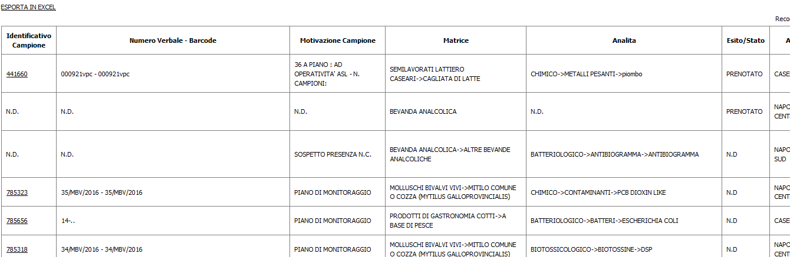
Se si digita sul numero di identificativo controlli/campione, si apre la finestra relativa all'impresa nel cavaliere corrispondente.
Associazione Esiti-Campioni
Tra le funzionalita' presenti nella sezione Home, e' disponibile "Associazione Esiti-Campioni". Tale funzionalita' permettera' di ricercare i campioni senza esito presenti su capi e/o partite per i quali e' stato stampato l'articolo 17. I filtri di ricerca presenti nella maschera sono i seguenti:
- Numero matricola/partita: [campo di testo libero]
- Data macellazione: [campo data]
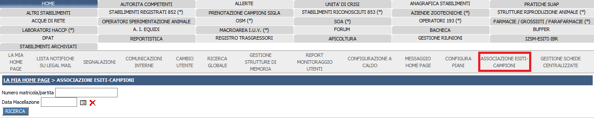
Effettuata la ricerca il sistema mostrerà i campioni senza esito trovati, ovviamente in base ai filtri opportunamente specificati.
I campi visualizzati saranno:
- Tipo macellazione: (Bovini | Ovicaprini)
- Numero matricola/partita
- Numero seduta
- Data Macellazione
- Impresa
- Motivo campione
- Matrice
- Tipo analisi
- Molecole/a agente etiologico
- Esito
- Data Esito
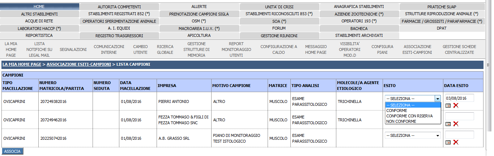
Mostrati i risultati, a questo punto l'utente potrà attribuire al campione scelto un "esito" e una "data esito" e potra' associarlo al campione mediante il bottone ASSOCIA, presente nella maschera.
L'esito registrato sara' visibile nel dettaglio del campione inserito in Visita Post Mortem (VPM) per il capo/partita ricercata.
Configura piani
Dopo aver effettuato il login, dal cavaliere Home è disponibile un link dal nome Configura Piani a partire dal quale lutente potra' associare, per ciascun piano, le matrici e gli analiti.
Tale operazione è possibile dopo aver cliccato rispettivamente su ANALITI e MATRICI, nella colonna di configurazione a seconda di quello che si vuole configurare.
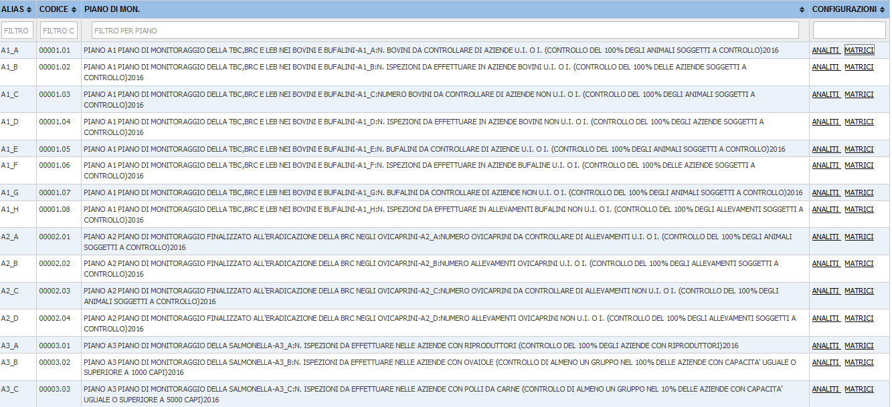
Dopo aver cliccato su uno dei due link, apparira' una popup contenente la lista delle matrici e degli analiti, secondo una struttura gerarchica. Cliccando su "Espandi", saranno visibili tutte le componenti che appartengono ad un particolare tipo di matrice o di analita. Il quadratino affianco al nome servirà per selezionare le voci al particolare piano/sottopiano per cui si sta lavorando.
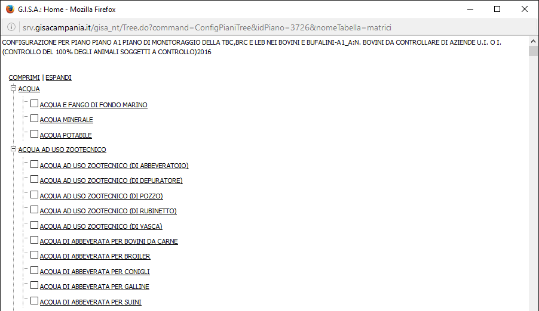
Per salvare la configurazione, è necessario cliccare l'apposito bottone "Salva configurazione".
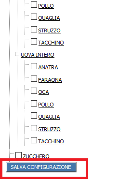
Dopo aver associato i blocchi dei piani di monitoraggio di interesse dal pannello sopra descritto, sara' possibile a questo punto constatare gli effetti della configurazione nell'aggiunta di un campione presso uno stabilimento.
- Si ricerca lo stabilimento di interesse
- Si inserisce un controllo ufficiale (in piano di monitoraggio di interesse)
- Si inserisce un campione che ha come motivazione del campionamento (o quesito diagnostico) il piano stesso.
- Si seleziona/no la/e matrice/i cliccand sull'apposito link "Seleziona matrice" e nel caso in cui è stata effettuata la configurazione delle matrici per il piano indicato nello step 3, il sistema mostrerà nella finestra (popup) SOLO le voci associate al piano in fase di configurazione. Viceversa saranno elencate tutte
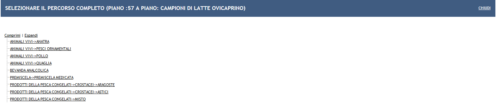 5. Si seleziona/no lo/gli analita/i cliccando sull'apposito link "Seleziona analiti" e nel caso in cui è stata effettuata la configurazione per il piano indicatnello step 3, il sistema mostrerà nella finestra (popup) SOLO le voci associate al piano in fase di configurazione. Viceversa saranno elencati tutti
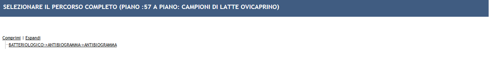
Anagrafica Stabilimenti
In questo cavaliere e' possibile ricercare qualsiasi tipologia di stabilimento/Operatore sottoposto a controllo inserito nel Sistema.
Le prime operazioni che si possono effettuare sono:
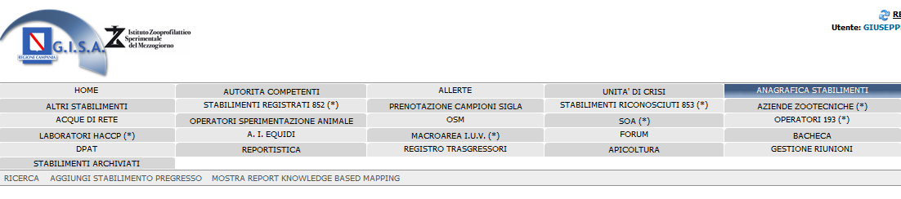
RICERCA
Nella pagina di apertura l'utente avrà la possibilita di eseguire due tipi di ricerche:
- Ricerca Rapida: in quest'area vi e' la possibilita' di filtrare per i campi principali che costituiscono l'anagrafica di uno stabilimento come:
- Norma di Riferimento: rappresenta il regolamento secondo cui è classificata un'attivita produttiva. Come valori del campo Norma ci sono quelle previste dal Ministero (Reg Ce 852/04, Reg Ce 183/05-Osm, Reg Ce 853/04, Reg Ce 1069/09-Soa e Reg Ce 193/06- Farmacosorveglianza) e quelle previste dal sistema Gisa per poter classificare tutti gli altri tipi di Stabiliment/Operatori soggetti a Controlli ufficiali (Esempio. Aziende zootecniche, Operatori privati,Zone di Molluschicoltura). La scelta di incudere Norme non previste dal Ministero è data dal fatto di mettere a disposizione dell'utente un punto unico di ricerca delle anagrafiche del sistema.
- Cerca In : tipo di ricerca che l'utente vuole eseguire. Tramite questo campo se valorizzato, l'utente può ricercare le anagrafiche di un particolare tipo come:
- PRATICHE IN ITINERE: esegue la ricerca solo nelle pratiche SCIA inserite dall'utente ASL o provenienti dal SUAP che si trovano nello stato In Itinere o Respinto,
- VECCHIA ANAGRAFICA OPERATORI NON SOGGETTI A SCIA: Esegue la ricerca SOLO nelle anagrafiche che fanno parte del cavaliere "Altri stabilimenti" (Es. Molluschicoltura,Operatori,Privati Abusivi..) o di tutti gli altri cavalieri diversi da Anagrafica Stabilimenti (Stabilimenti 852, Stabilimenti 853,Canili,Colonie,OSM)
- NUOVA ANAGRAFICA: Esegue la ricerca SOLO degli stabilimenti che sono stati inseriti tramite una SCIA o come PREGRESSO, inteso sia come trasferimento in Anagrafica Stabilimenti o come aggiunta di uno preSCIA.
- STABILIMENTI ARCHIVIATI: esegue la ricerca SOLO degli stabilimenti che si trovano nel cavaliere Stabilimenti Archiviati.
- ASL: asl di competenza dello stabilimento
- Nome/Ditta/Ragione Sociale: denominazione dello stabilimento
- Descrizione Attività Produttiva: attività produttiva svolta nello stabilimento. Non occorre indicare l'intera descrizione della linea di attività ma basta indicare le parole chiave che la descrivono.
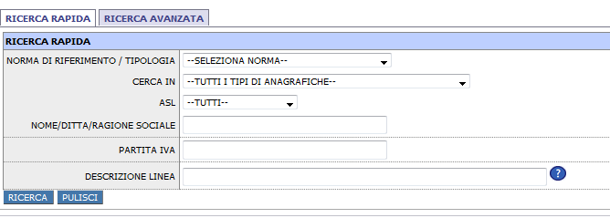
- Ricerca Avanzata: questa maschera consente di specificare più filtri di ricerca rispetto a quella precedente. I filtri sono raggruppati nel seguente modo:
- Ricerca Per Norma di Riferimento/Descrizione attività: oltre i filtri di ricerca specificati in precedenza, consente di poter ricerca uno stabilimento mediante il Numero di riconoscimento o Codice Azienda
- Ricerca per Impresa: consente di ricercare uno stabilimento tramite la denominazione e partita iva
- Ricerca per Stabilimento (Sede Operativa): consente di ricercare uno stabilimento tramite la sede produttiva
- Ricerca Per Altri Campi: consente di specificare come filtri di ricerca il tipo di attività mobile. Selezionando il tipo di attività mobile, il sistema mostrerà il campo targa in modo da poter cercare un determinato autoveicolo. Oltre al tipo di attivita è possibile ricercare tutte le Anagrafiche che sono state sottoposte a Controlli Ufficiali per una particolare Allerta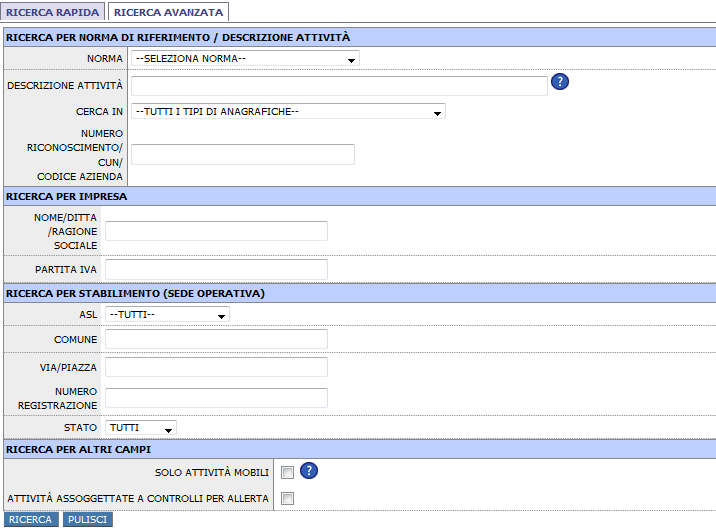
Qualora non vengano specificati Filtri di ricerca, il sistema mostrerà la lista di tutte le Anagrafiche presenti nel sistema, 10 per volta.
(Nota) : La ricerca proporrà lo stabilimento tante volte quante solo le attività produttive che svolge.
Ai ruoli HD, è associato il permesso per scaricare le anagrafiche in formato XML partendo dagli stabilimenti presenti nella lista dei risultati ricerca, tramite il bottone SCARICA IN FORMATO XML (presente in alto/basso a destra). Cliccando sul bottone viene scaricato un archivio contenente un file .xml per ciascuno degli stabilimenti, ed un file .xml riepilogativo di tutti i risultati dalla ricerca.

IMPORTA IN ANAGRAFICA STABILIMENTI
L'operazione di trasferimento di uno stabilimento in nuova anagrafica può essere fatta SOLO dagli utenti HD, fatta eccezione per gli OSM, i SOA e gli 853, questi ultimi due a carico dei funzionari regionali.

Cliccando sul bottone Importa in Anagrafica Stabilimenti, verrà presentata all'utente la maschera da compilare con i dati mancanti.
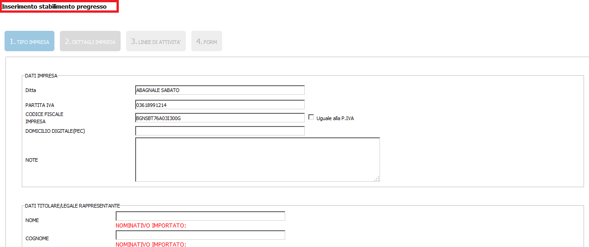
Completando la compilazione (basterà proseguire digitando sul tasto "avanti") si prosegue con le schermate relative alle linee di attività: anche in questo caso ci sarà un aiuto in quanto si potranno leggere le linee di attività "Vecchie" (se esistenti) ed inserire le linee "Nuove".
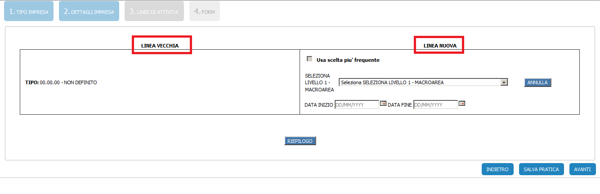
NOTA: Con il termine "LINEA VECCHIA" si vuole indicare l'attivita' dello stabilimento da importare secondo la classificazione PRE-MASTER LIST (es. ATECO per gli 852, CATEGORIA E IMPIANTO per gli 853 etc...), mentre con "LINEA NUOVA" si vuole indicare la linea di attivit classificata secondo la Master List.
Si salveranno i dati dell'impresa cliccando su "Salva Pratica" e da questo momento l'impresa sarà riportata nel cavaliere "Anagrafica Stabilimenti"
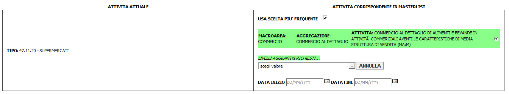
Spuntando l'opzione "Usa scelta piu' frequente", utilizzando l'apposito checkbox associato a ciascuna linea vecchia, è possibile visualizzare il candidato (o i candidati) che più frequentemente sono stati assegnati a quella vecchia linea, per guidare l'utente alla scelta migliore. Per ciascuna linea vecchia può essere selezionato un unico candidato. Il suggerimento si ferma al terzo livello della Master List, quindi nel caso in cui fosse necessario proseguire con l'attività specifica, all'utente verrà presentata tale possibilità.
AGGIUNGI STABILIMENTO PREGRESSO
Questa funzione deve essere utilizzata nei seguenti casi :
- Angrafare uno Stabilimento non presente nel sistema, la cui data inizio attività è precedente la data di entrata in vigore della Normativa 318/11
- Anagrafare una Nuova Attività produttiva presso uno Stabilimento presente nel sistema, la cui data inizio attività è precedente all'entrata in vigore della Normativa 318/11

L'utente deve compilare la form proprosta nell'immagine precedente. Dopo aver digitato una partita iva valida, il sistema verificherà l'esistenza dell'impresa. Nel caso in cui esiste una impresa con la partita iva inserita, l'utente sarà obbligato a selezonarla.
Selezionando l'impresa verranno autocompilati i dati della maschera riguardante:
- DATI IMPRESA
- DATI TITOLARE/LEGALE RAPPRESENTANTE
- DATI SEDE LEGALE
In caso di ATTIVITA' FISSA, la verifica dell'esistenza dello stabilimento viene fatta tramite la coppia Partita IVA e SEDE STABILIMENTO (Comune e indirizzo. La di a meno di 6 caratteri).
In caso di ATTIVITA' MOBILE, la verifica dell'esistenza dell'impresa avviene tramite la coppia PARTITA IVA e linee di attività.
Dopo aver inserito i dati dello stabilimento, cliccando sul tasto AVANTI presente in basso a destra, l'utente dovrà indicare le attività produttive svolte nello stabilimento. Si distinguono due scenari:
- ATTIVITA' FISSA: l'utente potrà specificare più linee di attività.
- ATTIVITA' MOBILE: l'utente potrà indicare una SOLA attività produttiva.
Qualora esistano degli attributi aggiuntivi alla linea di attività specificata, il sistema richiederà di compilarli come dati obbligatori. Attualmente le linee di attività che lo prevedono sono entrambe afferenti alla macroarea IUV:
- Canile/pensione
- Vendita di animali Ingrosso o Dettaglio
I campi proposti dal sistema sono :
- Data Autorizzazione
- Numero Autorizzazione
- Nome Referente
- Cognome referente
- Codice Fiscale Referente
- Specie animali (nel caso di attività produttiva di tipo Vendita di animali)
Cliccando sul pulsante Salva pratica, il sistema salverà i dati inseriti e lo stabilimento sarà ricercabile dal cavaliere Anagrafica Stabilimenti.L'utente visualizzerà uno dei seguenti messaggi in base all'elaborazione del sistema:
- Inserimento Avvenuto con Successo: lo stabilimento o l'attivia produttiva è stata inserita con successo.
- Attenzione Controllare di aver Inserito tutti i Campi: non sono stati compilati i campi obbligatori.
- Attenzione Esiste una impresa con la partita iva inserita presente negli altri cavalieri. Eseguire un Import i nuova Anagrafica: questo messaggio appare se lo stabilimento che si sta cercando di anagrafare esiste già in altri cavalieri.
- Attenzione! L'attività specificata come pregresso esiste in anagrafica stabilimenti. La funzione Aggiungi pregresso serve per inserire attività non presenti nel sistema antecedenti il DL318/11: L'attività produttiva indicata dall'utente è gia presente sullo stabilimento.
Operazioni di modifica stabilimento
Al fine di velocizzare l'inserimento delle richieste di variazioni su stabilimenti esistenti, sono state messe a disposizione degli utenti le seguenti due funzionalità:
- SCIA semplificata per stabilimento registrato
- Modifica stabilimento riconosciuto
SCIA semplificata per stabilimento registrato
Queta operazione è messa a disposizione SOLO degli utenti Veterinari (Semplici e/o Responsabili). E' accessibile a partire dalla maschera di dettaglio di uno stabilimento presente nel cavaliere "Anagrafica Stabilimenti", mediante apposito pulsante.

L'utente utilizzerà la funzione qualora voglia inserire una richiesta di modifica sullo stabilimento. Le operazioni di modifica previste dipendono dal tipo di attività (Fissa o mobile) che caratterizza lo stabilimento. In particolare saranno visibili le seguenti tipologie di modifiche per:
- Attività Fissa
- Ampliamento
- Cessazione (di tutto lo stabilimento o solo di una parte)
- Variazione di titolarità
- Modifica stato dei luoghi
- Sospensione (solo nel caso della funzione Modifica stabilimento riconosciuto)
- Attività Mobili
- Cessazione (di tutto lo stabilimento o solo di una parte)
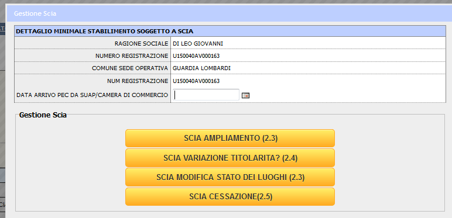
L'utente, dopo aver scelto il tipo di modifica, verrà reindirizzato alla maschera di inserimento della richiesta. La machera sarà autocompletata, per cui in questa gestione l'utente non dovrà piu reinserire tutti i dati dello stabilimenti, ma dovrà compilare solo i campi necessari per indicare i cambiamenti da apportare allo stabilimento:
- Nel caso dell'ampliamento, dovrà indicare le attività produttive con cui desidera ampliare lo stabilimento.
- Nel caso della cessazione potrà spuntare il flag "cessa tutto lo stabilimento", o indicare le linee di attivita da cessare.
- Nel caso della variazione di titolarità, dovrà apportare le modifiche desiderate sui dati dell'impresa.
- Nel caso di modifica stato dei luoghi, dovrà specificare solo la nuova planimetria.
All'interno della maschera inoltre è disponibile un pannello laterale che mostra i dati dello stabilimento che si è scelto di modificare.
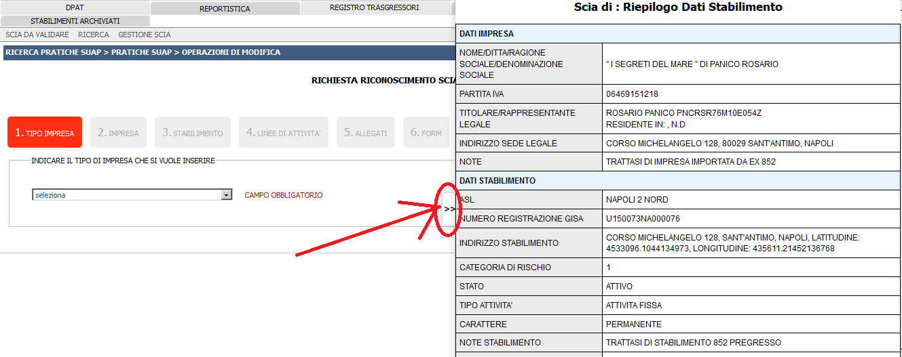
Modifica stabilimento riconosciuto
Queta operazione è messa a disposizione SOLO degli utenti Regionali. E' accessibile a partire dalla maschera di dettaglio di uno stabilimento presente nel cavaliere "Anagrafica Stabilimenti", mediante apposito pulsante. Il comportamento di questa funzione è analogo a quello descritto nel paragrafo precedente "SCIA semplificata per stabilimento registrato".
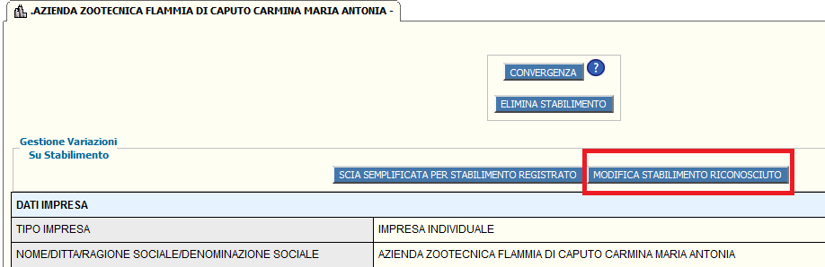
La differenza sta nel fatto che, mentre il primo viene attivato su stabilimenti che svolgono attività produttive di tipo registrabili, la modifica dello stabilimento riconosciuto viene attivitato su quelli che svolgono attività produttive di tipo ricnoscibili. Il salvataggio della richiesta deve avvenire mediante il pulsante "Salva Pratica" presente in basso a destra.
In entrambi i tipi di operazione, la pratica deve seguire il processo di "VALIDAZIONE" dal cavaliere "PRATICHE SUAP" (vedi "VALIDAZIONE" descritta nel precedente capitolo)
Elimina stabilimento
Questa funzione consente di eliminare uno stabilimento esistente. Lafunzione è disponibile nel dettaglio di uno stabilimento, solo in caso di mancanza CU associati allo stabilimento.
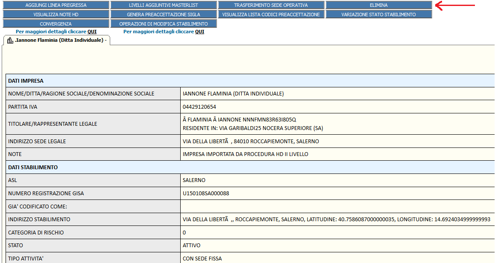
Cliccando sul pulsante "Elimina Anagrafica Stabilimento", viene chiesto all'utente se ? sicuro di volerlo eliminare;qualora l'utente clicca sul pulsante [OK], il sistema provvede ad eliminarlo, e per cui non sarà piu ricercabile.Cliccando su Annulla, si annulla l'operazione.L'utente verrà rediretto nella maschera di ricerca dopo che lo stabilimento sarà stato eliminato.
Riattivazione stabilimento sospeso
E' possibile riattivare le linee di attività sospese di uno stabilimento cliccando sul pulsante "riattivazione" presente nel dettaglio dell'impresa di riferimento.Come mostrato in figura.
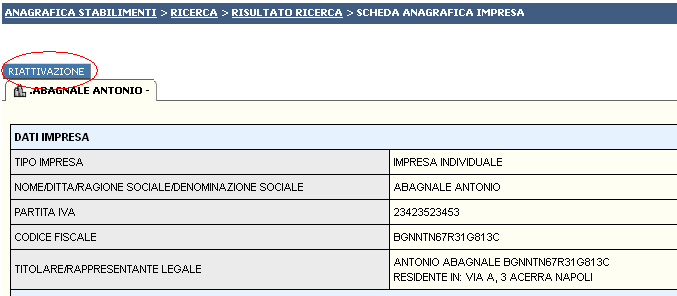
Compilando i dati obbligatori e spuntando la linea che si intende riattivare basta cliccare su "RIATTIVA" e la linea che precedentemente era sospesa risulterà ATTIVA nella scheda di dettaglio dello stabilimento.
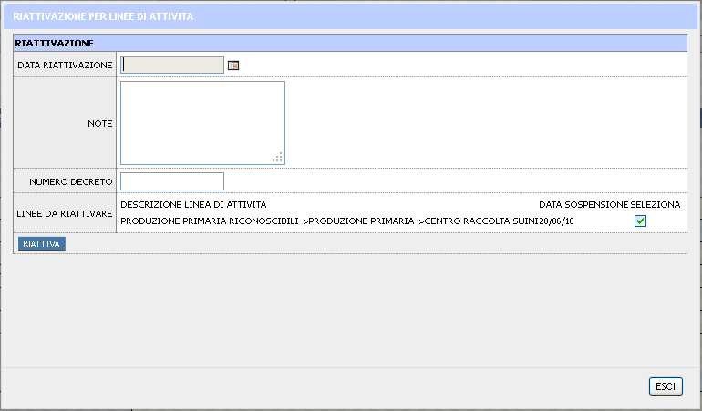
FUNZIONE DI CONVERGENZA
La funzione di Convergenza è disponibile a partire dal dettaglio di uno stabilimento, mediante il bottone CONVERGENZA (Figura 1).
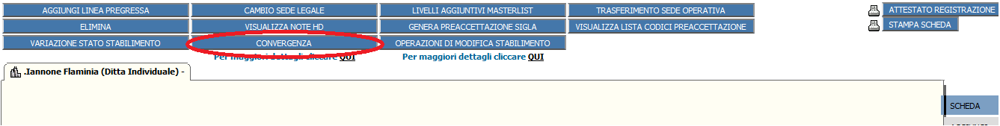
L'obiettivo della funzione, come spiegato in precedenza è quello di eliminare le schede duplicate presenti, convergendo i controlli ufficiali, la categorizzazione e le attività svolte da uno stabilimento di origine verso uno stabilimento di destinazione.
Attaulmente è diponibile nelle seguenti tipologie di anagrafiche (con Sede Fissa):
| Convergenza da - a | |
|---|---|
| Origine | Destinazione |
| Stabilimenti 852 | Stabilimenti 852 |
| Stabilimenti 852 | Anagrafica stabilimenti |
| Anagrafica stabilimenti | Anagrafica stabilimenti |
Cliccando sul bottone Convergenza il sistema eseguirà le seguenti azioni:
- il sistema mostrerà in una finestra (popup) la maschera di ricerca per individuare lo stabilimento di destinazione
- nella maschera risulteranno bloccati i filtri su Partita iva e comune della sede produttiva.

- Trovato lo stabilimento verso cui convergere, l'utente lo dovrà selezionare tramite il pulsate "SELEZIONA".
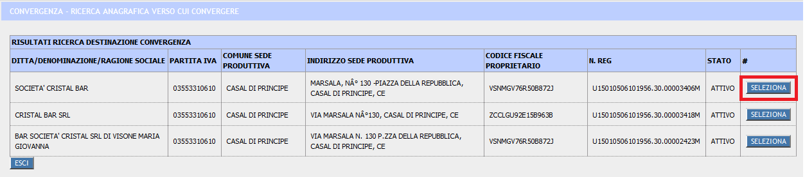
- Selezionato lo stabilimento di destinazione, il sistema mostrerà il riepilogo dello stabilimento origine, di destinazione e la conseguenza dell'operazione di convergenza (cosi come illutrato nelle immagini sottostanti).
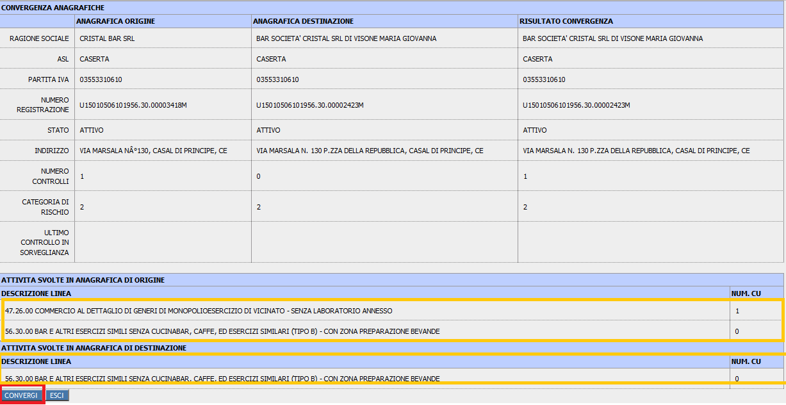
I tipi di convergenza applicate sono:
- Convergenza delle linee di Attività: tutte le attività produttive dello stabilimento di origine verranno aggiunte a quello di destinazione qualora non siano presenti.
- Convergenza dei Controlli ufficiali: i controlli ufficiali eseguiti sullo stabilimento di origine saranno spostati sullo stabilimento di destinazione (riportando anche le attività sottopota a controllo). Come conseguenza, i controlli che si aggiungeranno all'anagrafica di destinazione concorreranno al punteggio storico delle non conformità per la prossima categorizzazione.
- Convergenza Categorizzazione: La categoria di rischio riportata sullo stabilimento di destinazione sarà quella maggiore tra lo stabilimento di origine e quella di destinazione.
In tutti i casi, si provvederà all'eliminazione dello stabilimento di origine.
Nel caso in cui si esegue la convergenza da uno stabilimento presente nel cavaliere Stabilimenti 852 verso uno presente in Anagrafica stabilimenti, Il sistema proporrà un' attività produttiva di terzo livello (presente nella master list) per ogni attività (composta dall'ATECO) relativa allo stabilimento di origine. Qualora siano previsti livelli aggiuntivi, l'utente sarà obbligato a selezionarli per portare a termine l'operazione di convergenza.
NOTA : dal momento che esistono alcuni codici istat per cui il sistema non è a conoscenza dell'attivita produttiva presente in master list, l'utente dovrà comunicare l'associazione istat- linea di attività master list al servizio di help-desk di primo livello, per poter eseguire la convergenza.
Customizing Opineo
Before you make any cusomization or even start using Opineo create a 'div' element and assign it some id. Now add references to necessary Javascrip files e.g.
- A reference to latest jQuery library
- A reference to Opineo script file sudo nano opineo.js
The following customization options are available in Opineo:
View Type
- Detailed View
<script>
$(document).ready(function (){
$('#DefaultOptions').opineo('results.php', {curvalue:3,
view: 'detailed',
animation_speed: 'super',
show_total_votes_counter: false,
show_overall_rating: true});
})
</script>
- Compact View
<script>
$(document).ready(function (){
$('#CompactView').opineo('results.php',
{curvalue:3, view: 'compact',
animation_speed: 'super'});
})
</script>
- Mini View
<script>
$(document).ready(function (){
$('#MiniView').opineo('results.php', {curvalue:0, view: 'mini', callback: myCallback});
})
</script>
Animation Style
- Slow
<script>
$(document).ready(function (){
$('#opineo').opineo('results.php', {curvalue:0, view: 'mini', animation_speed:'slow'});
})
</script>
- Medium
<script>
$(document).ready(function (){
$('#opineo').opineo('results.php', {curvalue:0, view: 'mini', animation_speed:'mild'});
})
</script>
- Fast
<script>
$(document).ready(function (){
$('#opineo').opineo('results.php', {curvalue:0, view: 'mini', animation_speed:'fast'});
})
</script>
- Super Fast
<script>
$(document).ready(function (){
$('#opineo').opineo('results.php', {curvalue:0, view: 'mini', animation_speed:'super'});
})
</script>
- Ultra Fast
<script>
$(document).ready(function (){
$('#opineo').opineo('results.php', {curvalue:0, view: 'mini', animation_speed:'ultra fast'});
})
</script>
Bars Text
- Show
<script>
$(document).ready(function (){
$('#opineo').opineo('results.php', {curvalue:0, view: 'mini', votes_label:true});
})
</script>
- Hide
<script>
$(document).ready(function (){
$('#opineo').opineo('results.php', {curvalue:0, view: 'mini', votes_label:false});
})
</script>
Vote Counter
- Show
<script>
$(document).ready(function (){
$('#opineo').opineo('results.php', {curvalue:0, view: 'mini', show_votes_counter:true});
})
</script>
- Hide
<script>
$(document).ready(function (){
$('#opineo').opineo('results.php', {curvalue:0, view: 'mini', votes_label:false});
})
</script>
Rating Icons
- Colored
- Grey
Rating Titles
- Text For First Star
<script>
$(document).ready(function (){
$('#opineo').opineo('results.php', {curvalue:0, view: 'mini', star_1_text:'Hate It'});
})
</script>
- Text For Second Star
<script>
$(document).ready(function (){
$('#opineo').opineo('results.php', {curvalue:0, view: 'mini', star_2_text:'Don't Like It'});
})
</script>
- Text For Third Star
<script>
$(document).ready(function (){
$('#opineo').opineo('results.php', {curvalue:0, view: 'mini', star_1_text:'Its OK'});
})
</script>
- Text For Fourth Star
<script>
$(document).ready(function (){
$('#opineo').opineo('results.php', {curvalue:0, view: 'mini', star_1_text:'Like It'});
})
</script>
- Text For Fifth Star
<script>
$(document).ready(function (){
$('#opineo').opineo('results.php', {curvalue:0, view: 'mini', star_1_text:'Love It'});
})
</script>
Bar Colors
- Colors of Red Bar
- Colors of Yellow Bar
- Colors of Green Bar